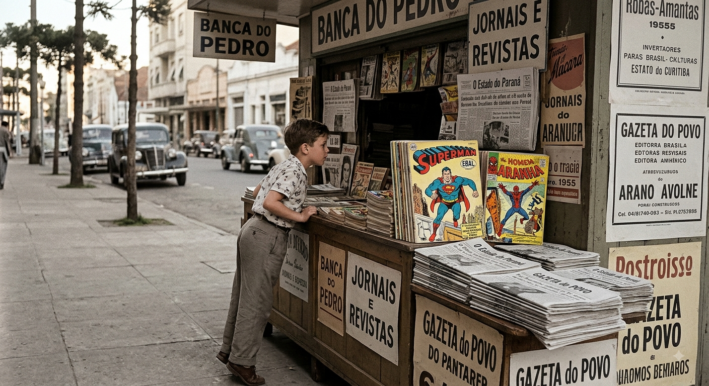
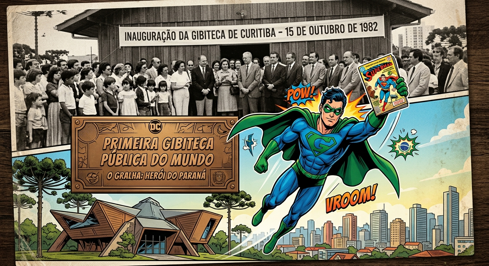
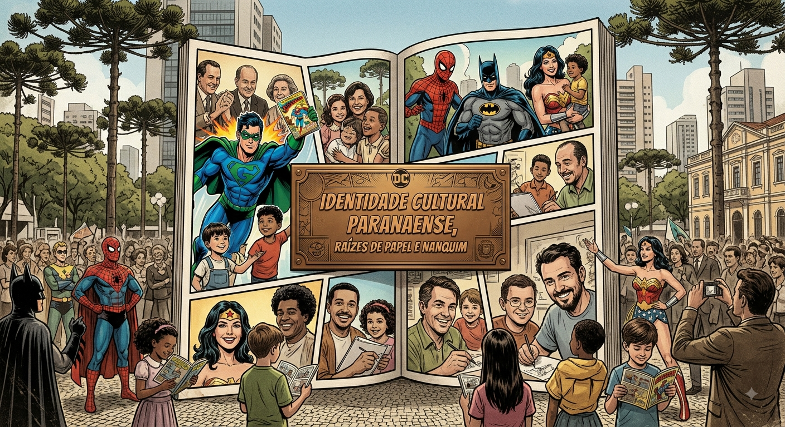

As Páginas que Conquistaram o Mundo: A Chegada das HQs de Marvel e DC ao Brasil
A história dos quadrinhos de super-heróis no Brasil é uma jornada fascinante que começou entre as décadas de 1930 e 1940, impulsionada pelo dinamismo da imprensa brasileira e por pioneiros da comunicação como Adolfo Aizen. Figuras icônicas da DC Comics, como o Superman e o Batman, desembarcaram primeiro em suplementos infantis e na histórica Editora Brasil-América Latina (EBAL). Anos mais tarde, a Marvel Comics — a "Casa das Ideias" — expandiu esse universo com o Homem-Aranha, o Quarteto Fantástico e os Vingadores através da RGE e da marcante era dos gibis em "formatinho" da Editora Abril. O sucesso estrondoso dessas narrativas moldou o hábito de leitura de gerações de brasileiros, abrindo caminho para que a cultura dos quadrinhos se consolidasse de norte a sul do país.

Do Papel ao Pioneirismo: O Desenvolvimento da Cultura Quadrinística no Paraná
No Paraná, o fascínio pelos heróis norte-americanos encontrou um terreno fértil para crescer e se transformar. A partir da segunda metade do século XX, bancas de jornais de Curitiba e do interior tornaram-se pontos de encontro para colecionadores, enquanto o talento local florescia — a exemplo das ilustrações pioneiras de Poty Lazzarotto. O grande marco do estado ocorreu em 15 de outubro de 1982, com a fundação da Gibiteca de Curitiba, a primeira gibiteca pública do mundo. O espaço consolidou a capital paranaense como um polo de preservação de relíquias da Marvel e DC e de formação de leitores e artistas. Essa efervescência também inspirou a criação de personagens locais genuínos, como O Gralha nos anos 1990, e impulsionou uma nova geração de desenhistas e roteiristas paranaenses que hoje ilustram oficialmente para as gigantes americanas..

Raízes de Papel e Nanquim: A Importância dos Quadrinhos para a Identidade Cultural Paranaense
A trajetória da Marvel e da DC no Paraná ultrapassou o mero entretenimento e tornou-se parte fundamental da identidade cultural do estado. Ao adotar as HQs não apenas como produto de consumo, mas como objeto de arte, estudo e produção própria, o Paraná construiu uma tradição singular de incentivo à leitura e às artes visuais. A presença constante de convenções de cultura pop, feiras independentes e a forte produção de quadrinhos locais mostram como o imaginário dos super-heróis dialoga diretamente com a criatividade paranaense. Assim, o estado não apenas acolheu esses ícones globais, mas ressignificou seu impacto, tornando-se uma referência nacional em formação cultural, linguagem gráfica e celebração da nona arte.

Curiosidades
Curiosidades 1
Pioneirismo Mundial e Formação de Talentos O Paraná não apenas consumiu quadrinhos, mas fez história ao inaugurar a Gibiteca de Curitiba em 1982, sendo a primeira gibiteca pública do mundo totalmente dedicada a essa arte. Essa iniciativa transformou a capital em um verdadeiro celeiro de talentos, criando um espaço de preservação e incentivo à leitura que inspirou diversas gerações de leitores e serviu de modelo para a criação de acervos semelhantes por todo o país.
Curiosidades 2
Do Herói Local às Editoras Internacionais A paixão pelas HQs no estado foi tão marcante que acabou gerando seus próprios ícones, como O Gralha — o super-herói genuinamente paranaense criado na década de 1990 que homenageia a ave símbolo da região. Mais do que uma brincadeira local, essa forte cultura de quadrinhos abriu portas para que roteristas e desenhistas paranaenses formados na cena independente chegassem ao mercado global, ilustrando hoje de forma oficial histórias de gigantes como Marvel e DC.